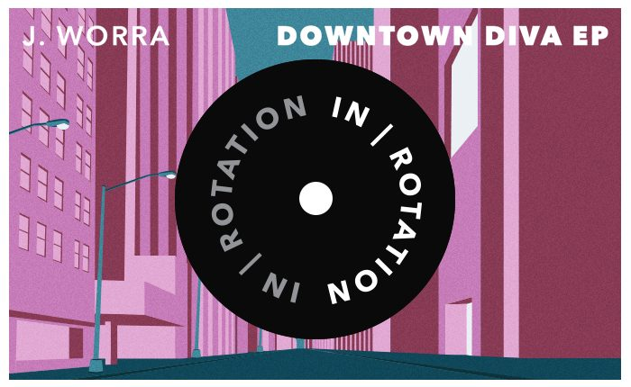

J. Worra Hits Her Stride on the 5-Track Powerhouse ‘Downtown Diva’ EP


Emerging from the Chicago club scene before moving to L.A., J. Worra has seen her passions realized and her unique sound truly come together this year. Her Downtown Diva EP has just dropped on Insomniac’s IN / ROTATION label, and it’s certain to be her biggest yet—a five-track powerhouse that takes no prisoners and unleashes her polished tech house sound in all its glory.
“Above all, I think I have finally hit my stride with production. It takes a long time to grow into your sound and really start to get recognized for it, and I think I am finally there.”
With the Downtown Diva EP out now, we thought it was the perfect time to have a chat with J. Worra and find out about her journey to where she is now, as well as what it takes to nail one’s sound.
How have things been going this year? What have been the standouts for you?
Musically, this has been one of the craziest years of my life. I got signed on to Circle Talent Agency and landed an amazing agent, Chad Cohen, and he has been grinding for me. Last weekend, I played CRSSD Festival, and that was a blast; I have always wanted to play there. One of my favorite shows was probably playing Exchange LA for the first time, alongside Shiba San. It’s hard to even find the right words for that night!
You’re based in L.A., though you rose through the ranks in Chicago with several residencies early in your career. Tell us a bit about your journey to where you are now.
Chicago holds a very special place in my heart. I started DJing and producing in 2011, and I really wasn’t sure what the potential was—I just knew I loved playing shows and making music. Some of the best clubs in the city started giving me a shot, and the rest is history. This gave me confidence and helped me believe in myself, as well as my music. I am actually heading back there to play a show at Spybar this Saturday with Sacha Robotti! It will be the first show I have played there since I moved, and I am so excited for it.
What stands out about your sound is that it’s already quite realized: slick production, very tight tech house grooves, and a lot of functional appeal for the mainroom.
It definitely has taken time to develop my sound and find my lane. I have always had a lot of house influences (Green Velvet, Chris Lake and Riva Starr), but I think the struggle is becoming your own artist and not trying to recreate what is already out there. It is so easy to sit down and listen to an artist you love and compare your music to them, and try to make something like theirs, rather than pull the influence they give you and channel it into your own art. I struggled for a while with really wanting to be like others, and it kind of muddied the approach I was taking to music. The big message here is to become your own artist, not try to be like one that’s already out there, because you never know the impact you’ll have being your authentic self.
Your Downtown Diva EP on IN / ROTATION should be your biggest yet.
This EP means so much to me for so many reasons. First and foremost, the IN / ROTATION team gave me room to be me. Joe and Greg allowed me to put together a group of tracks that showcased who I am, and there are not many labels that do that.
I made these tracks at all different times. “Breakdown” is the oldest, and it wasn’t even in my mind to release. I had sent it out to some other artists as a promo, and they played it out a lot and loved it.
I made “Repeat After Me” in one night. I produced the track, and then a vocal idea popped into my head. I grabbed my mic and recorded in a few layers. The next day, I listened back to the whole thing and loved how the vocal worked with the track; it is probably one of my favorites I have ever made.
“Downtown Diva” was so much fun to make, and it was another one that came together very fluidly. “BNCE” was another track that I never thought I would release, but every time I played it out, the crowd went nuts, so it made sense to add it in.
I look at a lot of the music I make, and the tracks are like timestamps. I remember where I was, how I was feeling, and the driving forces behind each track. I was going through a lot of stuff in my personal life, and this EP was a big part of the healing process. Music really is a beautiful thing like that. I hope everyone enjoys this release!